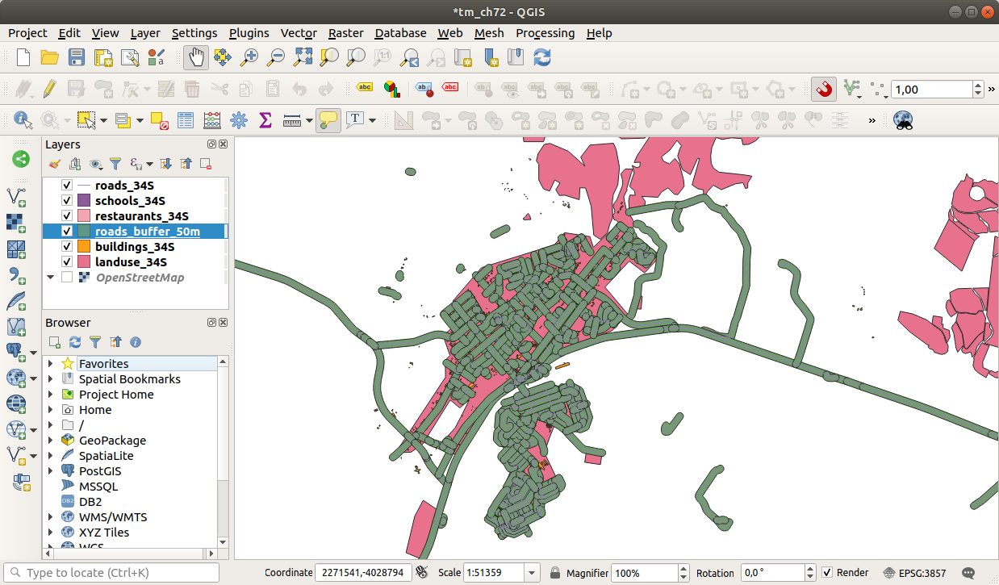
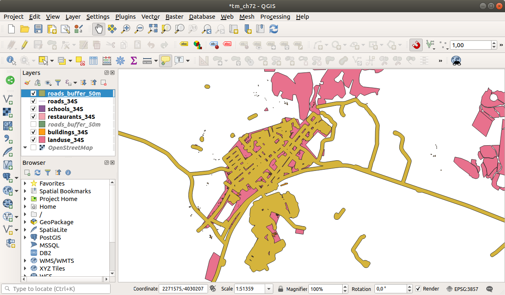
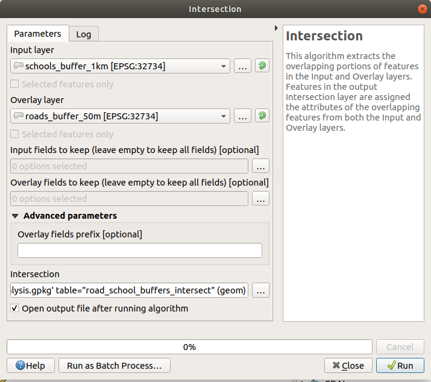
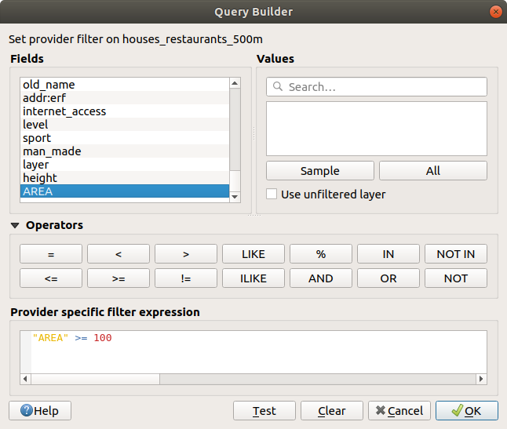

Vector data can also be analyzed to reveal how different features
interact with each other in space.
There are many different analysis-related functions, so we won’t go
through them all. Rather, we will pose a question and try to solve it
using the tools that QGIS provides.
The goal for this lesson: To ask a question and solve it using
analysis tools.
Let’s start off the process by deciding on a problem to solve.
For example, you are an estate agent and you are looking for a
residential property in Swellendam for clients who have the
following criteria:
It needs to be in Swellendam
It must be within reasonable driving distance of a school (say 1km)
To answer these questions, we are going to need the following data:
The residential properties (buildings) in the area
The roads in and around the town
The location of schools and restaurants
The size of buildings
These data are available through OSM, and you should find that the
dataset you have been using throughout this manual also can be used
for this lesson.
If you want to download data from another area, jump to the
Introduction Chapter to read how to do it.
Note
Although OSM downloads have consistent data fields, the
coverage and detail does vary.
If you find that your chosen region does not contain information
on restaurants, for example, you may need to chose a different
region.
6.2.4. ★☆☆ Follow Along: Start a Project and get the Data
We first need to load the data to work with.
Start a new QGIS project
If you want, you can add a background map. Open the
Browser and load the OSM background map
from the XYZ Tiles menu.
In the training_data.gpkg Geopackage database, you will
find most the datasets we will use in this chapter:
buildings
roads
restaurants
schools
Load them, and also landuse.sqlite.
Zoom to the layer extent to see Swellendam, South Africa
Before proceeding we will filter the roads layer,
in order to have only some specific road types to work with.
Some roads in OSM datasets are listed as unclassified,
tracks, path and footway.
We want to exclude these from our dataset and focus on the other road types,
more suitable for this exercise.
Moreover, OSM data might not be updated everywhere,
and we will also exclude NULL values.
Right click on the roads layer and choose Filter….
In the dialog that pops up we filter these features with the following expression:
The concatenation of the two operators NOT and IN excludes
all the features that have these attribute values in the highway field.
ISNOTNULL combined with the AND operator excludes roads with
no value in the highway field.
Note the icon next to the roads layer.
It helps you remember that this layer has a filter activated,
so some features may not be available in the project.
The map with all the data should look like the following one:
Because we are going to be measuring distances within our layers, we need to
change the layers’ CRS. To do this, we need to select each layer in turn,
save the layer to a new one with our new projection, then import that new
layer into our map.
You have many different options, e.g. you can export each layer as an
ESRI Shapefile format dataset, you can append the layers to an
existing GeoPackage file, or you can create another GeoPackage file
and fill it with the new reprojected layers.
We will show the last option, so the training_data.gpkg will
remain clean.
Feel free to choose the best workflow for yourself.
Note
In this example, we are using the WGS 84 / UTM zone 34S
CRS, but you should use a UTM CRS which is more appropriate for
your region.
Right click the roads layer in the Layers
panel
Click Export –> Save Features As…
In the Save Vector Layer As dialog choose
GeoPackage as Format
Click on … for the File name, and name
the new GeoPackage vector_analysis
Change the Layer name to roads_34S
Change the CRS to WGS 84 / UTM zone 34S
Click on OK:
This will create the new GeoPackage database and add the roads_34S layer.
Repeat this process for each layer, creating a new layer in the
vector_analysis.gpkg GeoPackage file with _34S appended to the original name.
On macOS, press the Replace button in the dialog that pops up
to allow QGIS to overwrite the existing GeoPackage.
Note
When you choose to save a layer to an existing GeoPackage,
QGIS will add that layer next to the existing layers in the GeoPackage,
if no layer of the same name already exists.
Remove each of the old layers from the project
Once you have completed the process for all the layers, right click
on any layer and click Zoom to layer extent to focus
the map to the area of interest.
Now that we have converted OSM data to a UTM projection, we can begin
our calculations.
6.2.6. ★☆☆ Follow Along: Analyzing the Problem: Distances From Schools and Roads
QGIS allows you to calculate distances between any vector object.
Make sure that only the roads_34S and buildings_34S layers
are visible (to simplify the map while you’re working)
Click on the Processing ► Toolbox to open the
analytical core of QGIS.
Basically, all algorithms (for vector and raster analysis)
are available in this toolbox.
We start by calculating the area around the roads_34S by using
the Buffer algorithm. You can find it in the
Vector Geometry group.
Or you can type buffer in the search menu in the upper part of
the toolbox:
Double click on it to open the algorithm dialog
Select roads_34S as Input layer, set
Distance to 50 and use the default values for the rest
of the parameters.
The default Distance is in meters because our input
dataset is in a Projected Coordinate System that uses meter as its
basic measurement unit.
You can use the combo box to choose other projected units like
kilometers, yards, etc.
Note
If you are trying to make a buffer on a layer with a
Geographical Coordinate System, Processing will warn you and
suggest to reproject the layer to a metric Coordinate System.
By default, Processing creates temporary layers and adds them to
the Layers panel.
You can also append the result to the GeoPackage database by:
Clicking on the … button and choose
Save to GeoPackage…
Naming the new layer roads_buffer_50m
Saving it in the vector_analysis.gpkg file
Click on Run, and then close the Buffer
dialog
Now your map will look something like this:

If your new layer is at the top of the Layers list, it
will probably obscure much of your map, but this gives you all the
areas in your region which are within 50m of a road.
Notice that there are distinct areas within your buffer, which
correspond to each individual road. To get rid of this problem:
Uncheck the roads_buffer_50m layer and re-create the
buffer with Dissolve results enabled.
Save the output as roads_buffer_50m_dissolved
Click Run and close the Buffer dialog
Once you have added the layer to the Layers panel, it
will look like this:

Now there are no unnecessary subdivisions.
Note
The Short Help on the right side of the dialog explains
how the algorithm works.
If you need more information, just click on the Help
button in the bottom part to open a more detailed guide of the
algorithm.
Use the same approach as above and create a buffer for your schools.
It shall be 1km in radius.
Save the new layer in the vector_analysis.gpkg file as schools_buffer_1km_dissolved.
Answer
Your buffer dialog should look like this:
The Buffer distance is 1 kilometer.
The Segments to approximate value is set to 20.
This is optional, but it’s recommended, because it makes the output buffers
look smoother. Compare this:
To this:
The first image shows the buffer with the Segments to approximate
value set to 5 and the second shows the value set to 20.
In our example, the difference is subtle, but you can see that the buffer’s edges
are smoother with the higher value.
Now we have identified areas where the road is less than 50 meters
away and areas where there is a school within 1 km (direct line, not
by road).
But obviously, we only want the areas where both of these criteria
are satisfied.
To do that, we will need to use the Intersect tool.
You can find it in Vector Overlay group in the
Processing Toolbox.
Use the two buffer layers as Input layer and
Overlay layer, choose vector_analysis.gpkg
GeoPackage in Intersection with Layer nameroad_school_buffers_intersect.
Leave the rest as suggested (default).

Click Run.
In the image below, the blue areas are where both of the distance
criteria are satisfied.
You may remove the two buffer layers and only keep the one that
shows where they overlap, since that’s what we really wanted to
know in the first place:
Now you’ve got the area that the buildings must overlap.
Next, you want to extract the buildings in that area.
Look for the menu entry
Vector Selection ► Extract by location
within the Processing Toolbox
Select buildings_34S in Extract features from.
Check intersect in
Where the features (geometric predicate),
select the buffer intersection layer in
By comparing to the features from.
Save to the vector_analysis.gpkg, and name the layer
well_located_houses.
Click Run and close the dialog
You will probably find that not much seems to have changed.
If so, move the well_located_houses layer to the top
of the layers list, then zoom in.
The red buildings are those which match our criteria, while the
buildings in green are those which do not.
Now you have two separated layers and can remove buildings_34S
from the layer list.
6.2.10. ★★☆ Try Yourself: Further Filter our Buildings
We now have a layer which shows us all the buildings within 1km of a
school and within 50m of a road.
We now need to reduce that selection to only show buildings which are
within 500m of a restaurant.
Using the processes described above, create a new layer called
houses_restaurants_500m which further filters your
well_located_houses layer to show only those which are
within 500m of a restaurant.
Answer
To create the new houses_restaurants_500m layer, we go through a two step
process:
First, create a buffer of 500m around the restaurants and add the layer to
the map:
Next, extract buildings within that buffer area:
Your map should now show only those buildings which are within 50m of a road,
1km of a school and 500m of a restaurant:
6.2.11. ★☆☆ Follow Along: Select Buildings of the Right Size
To see which buildings are of the correct size (more than 100 square
meters), we need to calculate their size.
Select the houses_restaurants_500m layer and open the
Field Calculator by clicking on the Open Field Calculator button in the main toolbar or in
the attribute table window
Select Create a new field, set the
Output field name to AREA, choose
Decimal number (real) as
Output field type, and choose $area from the
Geometry group.
The new field AREA will contain the area of each building in
square meters.
Click OK.
The AREA field has been added at the end of the attribute
table.
Click the Toggle Editing button to finish
editing, and save your edits when prompted.
In the Source tab of the layer properties, set
the Provider Feature Filter to "AREA>=100.

Click OK.
Your map should now only show you those buildings which match our
starting criteria and which are more than 100 square meters in size.
Save your solution as a new layer, using the approach you learned
above for doing so.
The file should be saved within the same GeoPackage database, with
the name solution.
Using the GIS problem solving approach together with QGIS vector
analysis tools, you were able to solve a problem with multiple
criteria quickly and easily.
 icon next to the roads layer.
It helps you remember that this layer has a filter activated,
so some features may not be available in the project.
icon next to the roads layer.
It helps you remember that this layer has a filter activated,
so some features may not be available in the project.


 Open Field Calculator button in the main toolbar or in
the attribute table window
Open Field Calculator button in the main toolbar or in
the attribute table window
 Toggle Editing button to finish
editing, and save your edits when prompted.
Toggle Editing button to finish
editing, and save your edits when prompted.